Homepage Wolves Foxes Coyote, Tanuki, And Maned Wolf Quiz Canine Images
Red Foxes are found in the continental United States from Alaska to Florida, but there subspecies also live in places like Europe. Their scientific name is Vulpes Vulpes, and they are a small, medium-red animals with a white belly. They have a body length of about 3 feet long and 2 feet tall. They weigh 6.5-24 pounds. They are the biggest species of True Fox. They have a lifespan of 3-4 years in the wild. The Red Fox has a long snout and red fur across the face, body, sides, and tail. Their throats, chins, and bellies are a grayish-white. They also have black feet and black-tipped ears. They are not listed on the UN Conservation Status List. Here is a picture of a Red Fox:
.jpg)
Their diet varies considerably. Their favorite foods are rodents and rabbits, but they will also eat birds, amphibians, and fruit. They prefer to hunt before the sunrise and during the late evening.They hunt by stalking their prey. They mark their territory by spraying their urine on trees. A Red Fox's body language consists of movements of the ears, tail, and postures. Foxes who are curious will rotate and flick their ears while sniffing. When a fox is playful, it will perk its ears and rise onto its hind legs. When afraid, they grin in submission, arch their backs, curve their bodies, crouch their legs, and lash their tails back and forth with their ears pointing backwards and pressed against their skull. The posture used to express submission is the the same thing, minus the back arching and crouching. Here are pictures of these behaviors. The first fox is hunting, the second one is scent marking, third one is curious, forth one is playful, and last one is submissive and afraid:
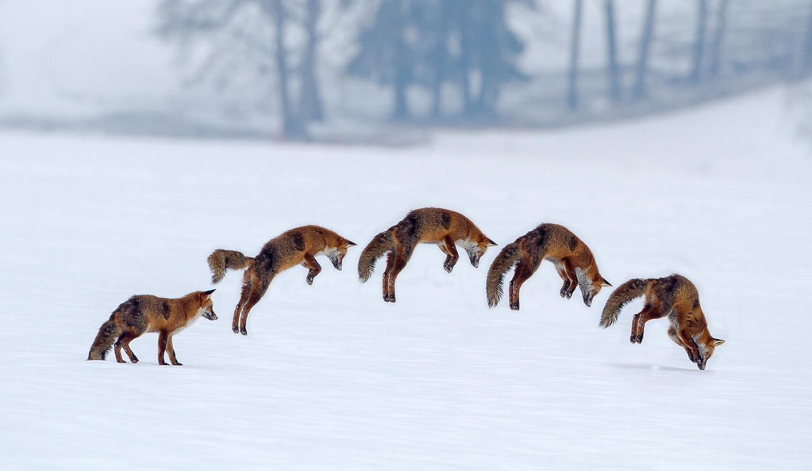 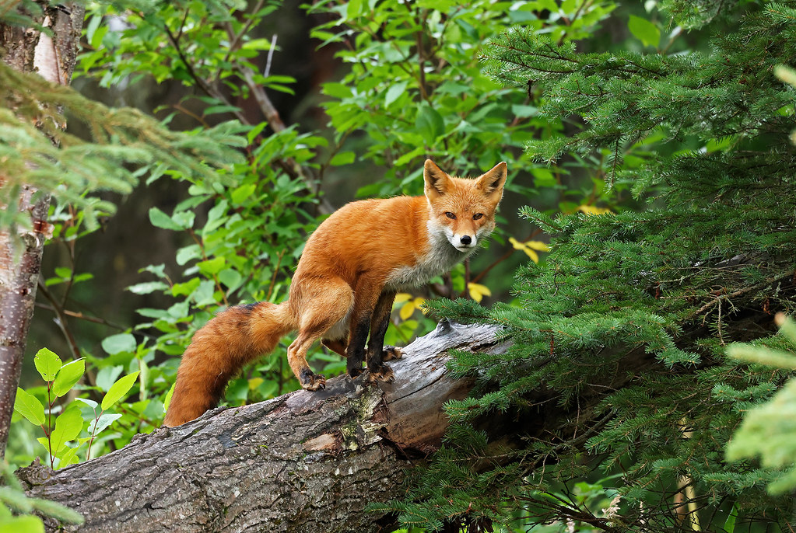 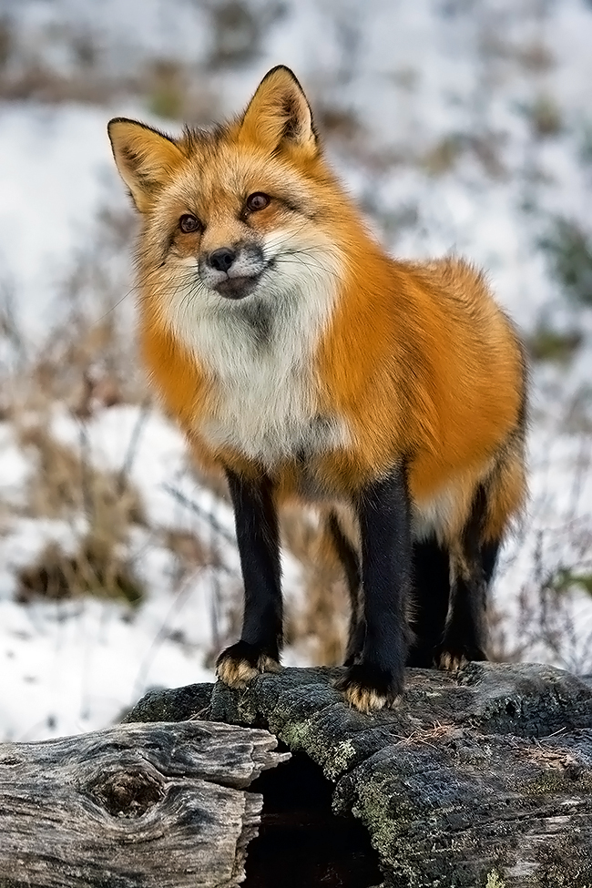 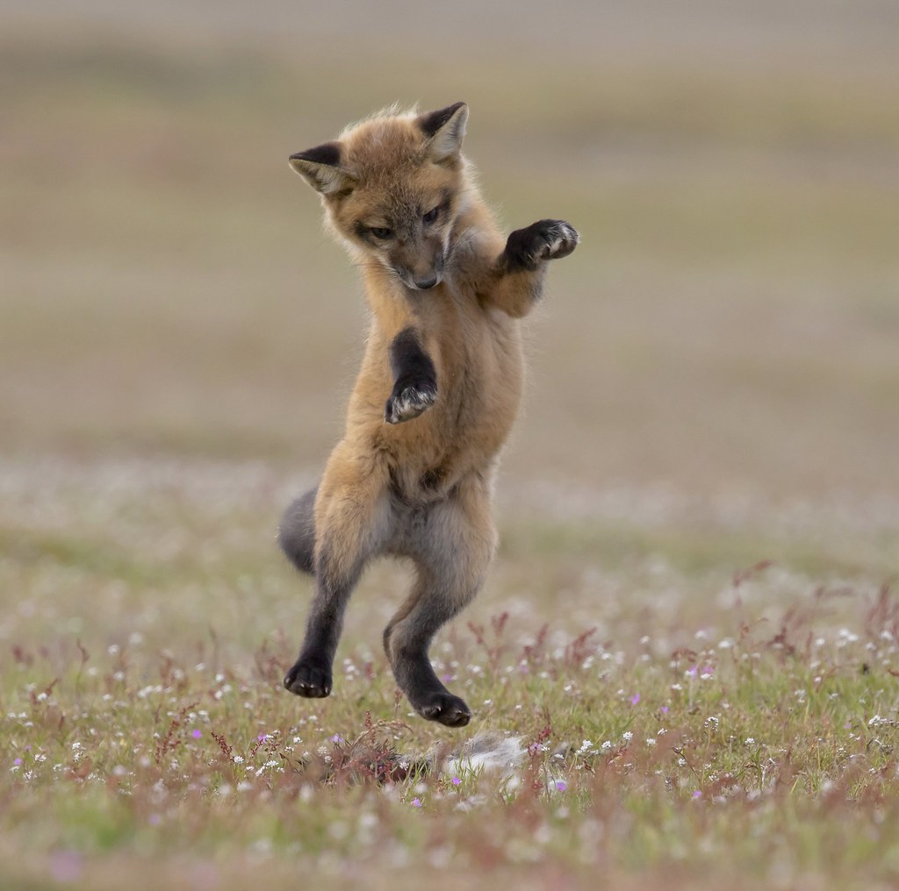 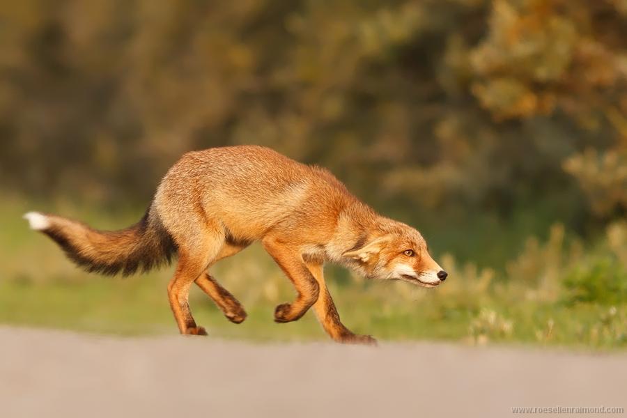They make dens underground, in caves, among rocks, or in a hollow log or tree. They breed from late December into the end of March, and they typically give birth to 1-11 kits. The average number of fox kits born is 6. Here is a picture of a Red Fox den and Red Fox kits:
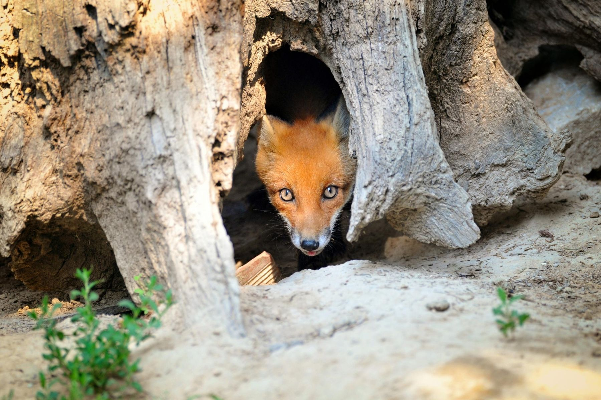 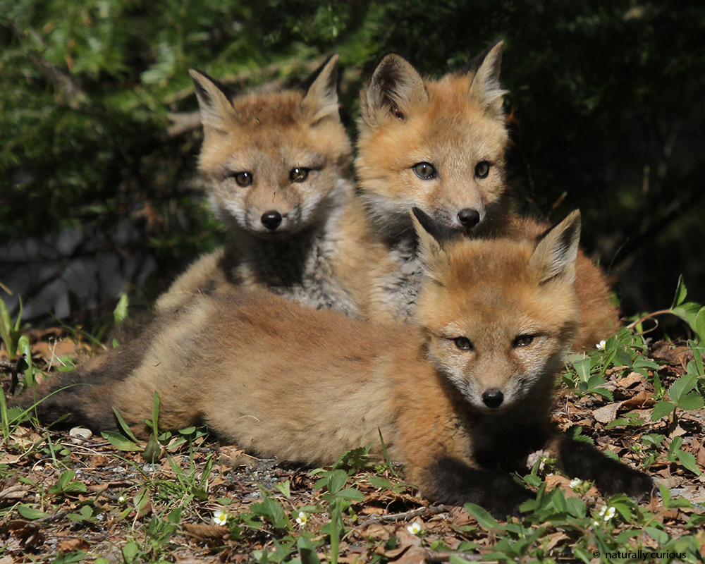The Arctic Fox, or Vulpes Lagopus, is a beautiful white fox native to the Arctic regions of the Northern Hemisphere. They live about 3-4 years. They are about 3-3.5 feet in length. Their gender plays a huge part in how much they weigh, as the size range for a male Arctic Fox is 7.1-20.7 pounds, but the weight range for a female is only 3.1-7.1 pounds. The Arctic Fox also has an extremely fluffy tail to protect itself from the cold. Their Conservation Status is Least Concern. Here is a picture of an Arctic Fox in the summer vs in the winter. The top one is summer, while the bottom one is winter:
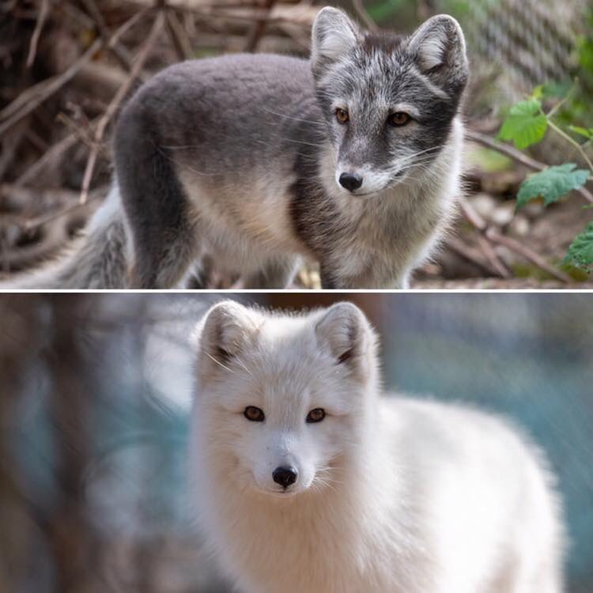They also yowl and use high-pitch sounds to communicate. They yowl to communicate over long distances, and they use high-pitched sounds to communicate that danger is nearby. They will bury themselves in the ground to stay safe. They eat almost anything, from small mammals to carrion, and berries to fruits, and even poop. Their favorite summer food is lemmings. They are highly nomadic. They make dens in snow banks. Mating occurs from April to July, and they give birth to two litters. The first litter is born from April through June, and the second litter is born from July to August. Here is a picture of Arctic Fox kits:
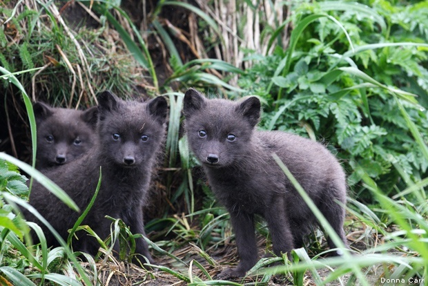Fennec Foxes are found in the desert regions of Africa and Arabia. Their scientific name is Vulpes Zerda, and they are a small tan and cream fox with large ears. They are the smallest species of fox, and they only weigh 2-3 pounds. They grow to be a length of only 14-16 inches, excluding the tail. The tail of a Fennec Fox is an additional 7-12 inches. Their small size and tan and white coloration helps them stay hidden from predators exceptionally well. Their Conservation Status is Least Concern. Here is a picture of a Fennec Fox:

Fennec Foxes primarily eat insects, although they will occasionally eat small rodents, lizards, birds, and eggs. They hunt alone and at night. They use their large ears to hear for food beneath the sand, which, when detected, they dig up. They are territorial, and use urine and feces to mark their territory. Vocalizations vary, and include barks, whimpers, shrieks, squeaks, growls, howls, and chatters. Here is a picture of a Fennec Fox with its prey:
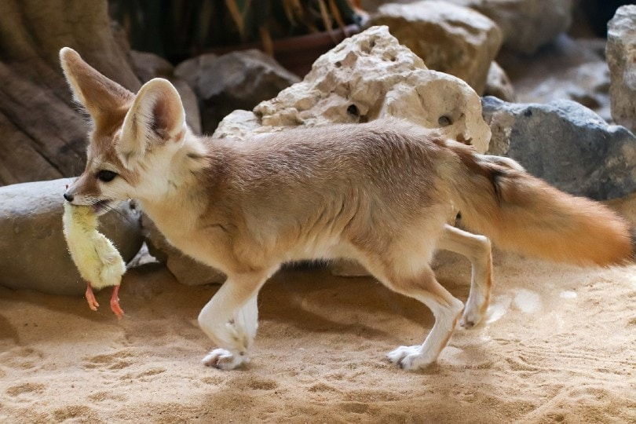Fennec Foxes mate from January to Feburary, and they mate for life. They typically give birth to one litter of 2-5 young per year. They give birth from March to April. Here is a picture of Fennec Fox kits:
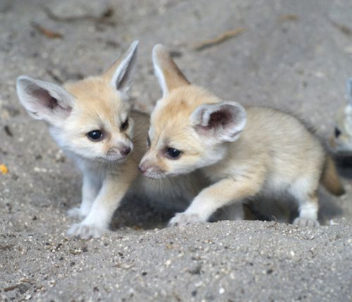